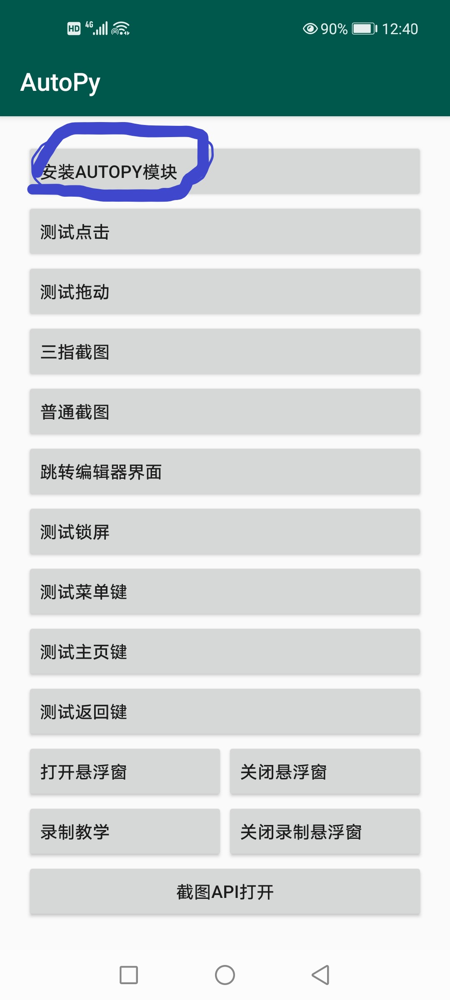
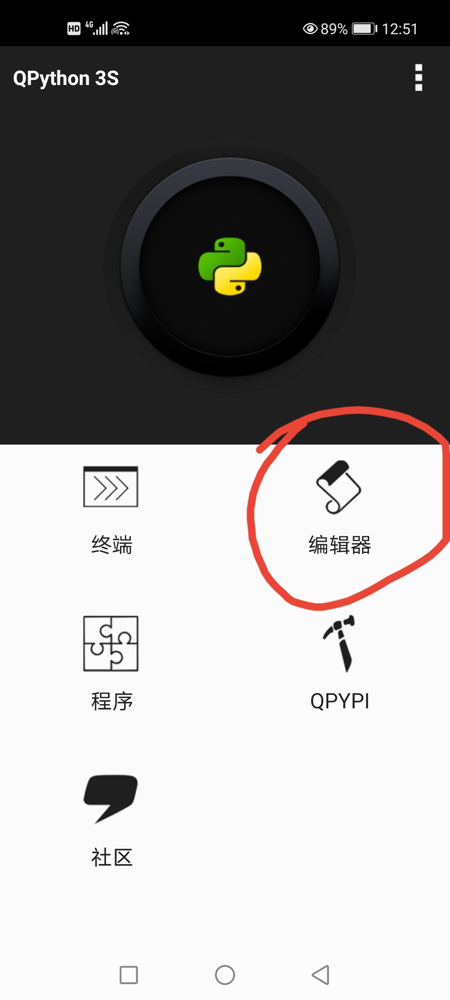
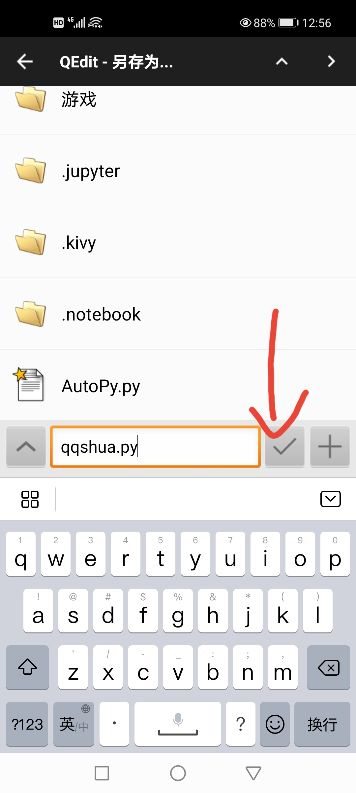
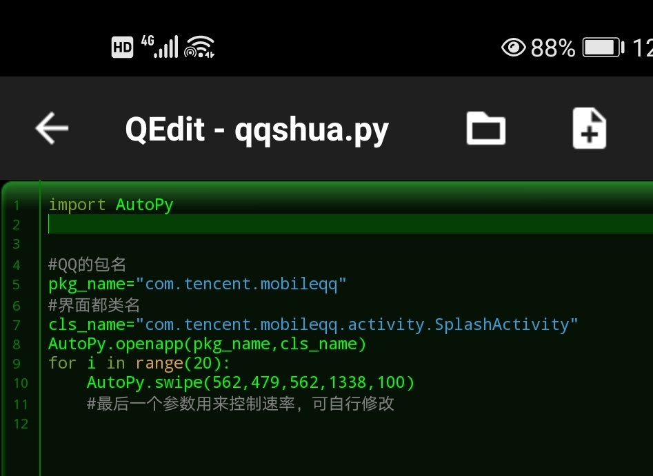

用AutoPy和Qpython实现简单的自动化
查阅的相关文档AutoPy开发文档
androidhelper Api文档
qq11日不是有全民刷一刷活动嘛，一天可以刷8次，像我这种懒人就不会自己去刷
首先下载AutoPy和Qpyhton
接下来打开AutoPy(无障碍服务暂时不用开，但等运行时一定要打开)
点击--安装AutoPy模块
安装完成后打开Qpython，按图所示操作


然后按照输入下图的代码并保存
接下来可以打开AutoPy,把无障碍服务打开(一定要打开)
然后把AutoPy挂在后台，打开Qpython,找到我们刚才保存的代码，点击运行就可以自动刷了
注：出现红包时仍需手动点击，觉得太快或者太慢可以自己修改参数，刷完后只需要熄屏就可以停止运行